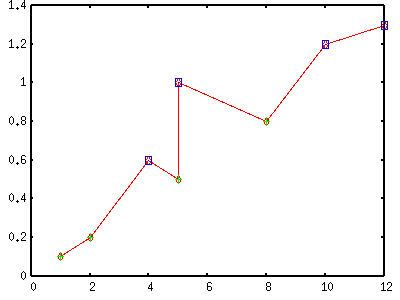
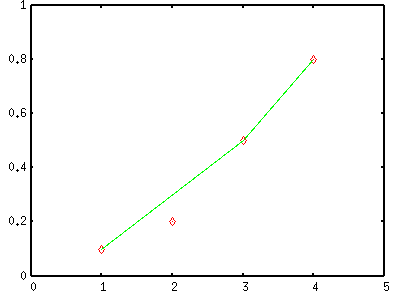
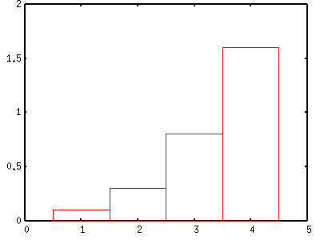

- not so Frequently Asked Questions -
update 2004/9/15
|
|
- not so Frequently Asked Questions - update 2004/9/15
|
|
not so FAQ |
Plotting Numerical Data in a Data File (No.3)How do I use UNIX commands inside gnuplot.With gnuplot you can modify the data in your file at plotting , but the flexibility is limited. For example, the data to be plotted are separated into two files - X data are in 'a.dat' and Y data are in 'b.dat', or you want to modify a specific data point in the file. Of course the best way is to edit your datafile before you plot it, but sometimes UNIX commands are helpful. Here we use the following commands. sortWith the sort command, you can concatenate / merge several data files.
% sort -n file1.dat file2.dat 1.0 0.1 2.0 0.2 4.0 0.6 5.0 0.5 5.0 1.0 8.0 0.8 10.0 1.2 12.0 1.3 Two datasets are shown by symbols, then all data points are connected by one line. gnuplot> plot "< cat -n file1.dat file2.dat" using 1:2 w l,\ > "file1.dat" u 1:2 w p,\ > "file2.dat" u 1:2 w p 
pastePaste command puts more than two files side by side.
% paste file1.dat file2.dat 1.0 0.1 1.0 0.6 2.0 0.2 2.0 1.0 3.0 0.5 3.0 1.2 4.0 0.8 4.0 1.3 To draw figure of (X,Y) pairs when X data are in 'file1.dat' and Y data are in 'file2.dat' : gnuplot> plot "< paste file1.dat file2.dat" using 2:4 w lp You can compare two files with this command. The paste command writes Y data of 'file1.dat' in the second column, and those of 'file2.dat' are in the fourth column, therefore difference between two data sets are expressed by $2-$4, and the ratios are by $2/$4 . gnuplot> plot "< paste file1.dat file2.dat" using 1:($2/$4) w points from Ken. Thanks !
sedThe stream editor sed is very powerful tool to edit your text data. It is impossible to explain everything here, so I show some useful examples. The above data file 'file1.dat' is used as the example. Shift X data of 1.0 to 1.2. gnuplot> plot '<sed "s/^ 1.0/ 1.2/g" file1.dat' Show all data points, but draw a line which does not pass through (2.0,0.2). gnuplot> plot 'file1.dat' u 1:2 with points,\ > '<sed "/^ 2.0/d" file1.dat' u 1:2 with lines 
Remove the third line. gnuplot> plot '<sed "3d" file1.dat' u 1:2 with points awkAwk is also very powerful language with which you can manipulate each data column in a file. Cumulative values of Y data are plotted with a bar graph. The last value becomes the sum of Y data.
gnuplot> plot "<awk '{x=x+$2; print $1,x}' file1.dat" with boxes

Change Y into zero when Y is less than 0.2.
gnuplot> plot "<awk '{print $1,($2<0.1) ? 0.0 : $2}' file1.dat" with lines
Multiply Y-values by 5 when X is in the range of [1:3].
gnuplot> plot "<awk '{print $1,($1<=3 && $1>=1) ? $2*5 : $2}' file1.dat" with lines
 |